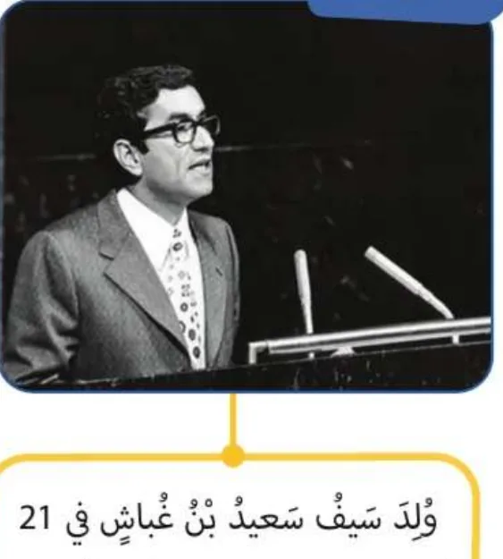

بِطاقَةُ الْمَصادِرِ وَالْمَفاهيمِ: حَدَثٌ وَذِكْرى
الدِّراساتُ الِاجْتِماعِيَّةُ · الصَّفُّ الثّالِثُ · ص 71–73
لِلْجَميعِ

وُلِدَ الشَّهيدُ سَيْفُ بْنُ سَعيدِ بْنِ غُباشٍ في رَأْسِ الْخَيْمَةِ عامَ 1932م، وَبَدَأَ تَعْليمَهُ في الْمَدْرَسَةِ الْأَحْمَدِيَّةِ ثُمَّ دَرَسَ في الْبَحْرَيْنِ وَالْعِراقِ وَأوروبّا وَتَعَلَّمَ خَمْسَ لُغاتٍ، وَكانَ وَزيرًا لِلْخارِجِيَّةِ عامَ 1971م، وَاسْتُشْهِدَ في مَطارِ أَبوظَبي عامَ 1977م، وَوَصَفَهُ الشَّيْخُ زايِدٌ بِأَنَّهُ مِثالٌ لِلرَّجُلِ الْمَسْؤولِ.📖 أَقْرَأُ النَّصَّ
سَيْفُ بْنُ سَعيدِ بْنِ غُباشٍ الْعِلْمُ وَالسِّياسَةُ: وُلِدَ سَيْفُ بْنُ سَعيدِ بْنِ غُباشٍ في 21 أُكْتوبَرَ 1932م بِإِمارَةِ رَأْسِ الْخَيْمَةِ. بَدَأَ مَسيرَتَهُ التَّعْليمِيَّةَ في الْمَدْرَسَةِ الْأَحْمَدِيَّةِ وَدَرَسَ أُصولَ الدّينِ وَاللُّغَةِ الْعَرَبِيَّةِ وَسافَرَ إِلى الْبَحْرَيْنِ طَلَبًا لِلْعِلْمِ وَالْمَعْرِفَةِ، غادَرَها إِلى الْعِراقِ بَعْدَ تَخَرُّجِهِ مِنَ الثّانَوِيَّةِ الْعامَّةِ لِيَبْدَأَ رِحْلَتَهُ الْجامِعِيَّةَ في دِراسَةِ الْهَنْدَسَةِ في جامِعَةِ بَغْدادَ، ثُمَّ اتَّجَهَ إِلى مِصْرَ وَمِنْها إِلى الْكُوَيْتِ لِيَعْمَلَ هُناكَ بِوَظيفَةِ مُساعِدِ مُهَنْدِسٍ. سافَرَ بَعْدَها إِلى عِدَّةِ عَواصِمَ أوروبِّيَّةٍ لِاسْتِكْمالِ دِراسَتِهِ الْجامِعِيَّةِ، وَتَمَكَّنَ مِنْ تَعَلُّمِ خَمْسِ لُغاتٍ وَالتَّحَدُّثِ بِها بِطَلاقَةٍ، وَبَعْدَ نَحْوِ 20 عامًا مِنَ الْغُرْبَةِ عادَ إِلى مَسْقَطِ رَأْسِهِ في رَأْسِ الْخَيْمَةِ مَمْلوءًا بِالْحَماسِ لِلْعَمَلِ في خِدْمَةِ وَطَنِهِ. الْمَناصِبُ: وَزيرُ الْخارِجِيَّةِ 1971م، وَوَزيرُ دَوْلَةٍ لِلشُّؤونِ الْخارِجِيَّةِ 1973م. اسْتِشْهادُهُ: في يَوْمِ الثُّلاثاءِ 25 أُكْتوبَرَ 1977م، كانَ سَيْفُ غُباشٍ - رَحِمَهُ اللهُ - يُرافِقُ أَحَدَ ضُيوفِ دَوْلَةِ الْإِماراتِ إِلى مَطارِ أَبوظَبي الدَّوْلِيِّ لِوَداعِهِ، وَعِنْدَ دُخولِهِ الْمَطارَ أَصابَتِ الْوَزيرَ سَيْفَ غُباشٍ رَصاصَةُ غَدْرٍ وَاسْتُشْهِدَ مُتَأَثِّرًا بِجِراحِهِ. قالَ الشَّيْخُ زايِدٌ - رَحِمَهُ اللهُ - عَنْهُ: «إِنَّهُ مِثالٌ لِلرَّجُلِ الْمَسْؤولِ، وَواحِدٌ مِنْ خيرَةِ الشَّبابِ مِمَّنْ جاهَدوا وَسَعَوْا إِلى خَيْرِ الْعَرَبِ وَوَحْدَةِ كَلِمَتِهِمْ وَتَضامُنِهِمْ».
كِتابي ص 71–73
📘 كَلِماتي
الشَّهيدُ
مَنْ ضَحّى لِلْوَطَنِ 🎖️
الْوَزيرُ
قائِدُ وِزارَةٍ 🏛️
الْمَدْرَسَةُ الْأَحْمَدِيَّةُ
مَدْرَسَتُهُ الْأولى 🏫
دَمِثُ الْخُلُقِ
حَسَنُ الْأَخْلاقِ 😊
💡 تَعَلَّمْتُ
🏙️وُلِدَ في رَأْسِ الْخَيْمَةِ 1932م.
🏫بَدَأَ في الْمَدْرَسَةِ الْأَحْمَدِيَّةِ.
🌍تَعَلَّمَ خَمْسَ لُغاتٍ.
🏛️وَزيرُ الْخارِجِيَّةِ 1971م.
✅ أُطَبِّقُ
☐أُصَمِّمُ بِطاقَةَ شَهيدٍ في ذاكِرَتي.
☐أُكْمِلُ كِتابي ص 72–73.
🏅 ⭐ أَحْسَنْتَ